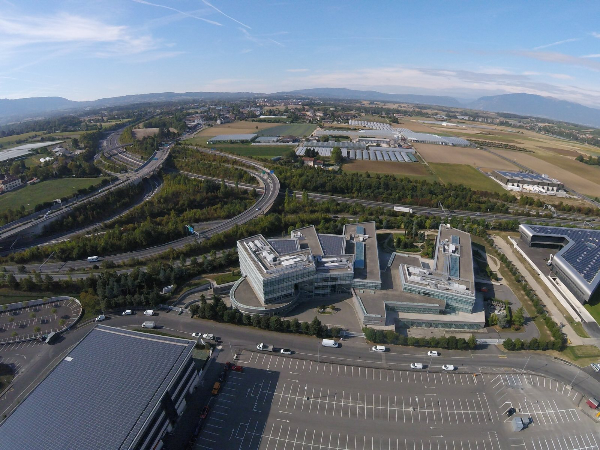

Perché conta: In sette giorni STM ha perso oltre il 13% mentre l'indice di Piazza Affari è rimasto quasi fermo. Quando un titolo si muove così tanto più del mercato, non è il mercato a spiegarlo: è il settore. E capire la differenza fra un calo di sistema e un calo specifico è ciò che distingue una correzione da un problema.
STMicroelectronics chiude la seduta del 14 ottobre 2026 a 43,05 euro, in calo dell'−1,77% dopo un'apertura a 44,39 euro, con scambi per circa 3,76 milioni di pezzi. Il ribasso di giornata è contenuto, ma arriva alla fine di una settimana durissima: nei sette giorni fino a questa chiusura il titolo ha perso circa il 13,7%, mentre il FTSE MIB è rimasto praticamente invariato. E proprio nella stessa giornata un broker ha alzato il giudizio a Buy.
Il divario con l'indice è il dato vero
Il numero che racconta la settimana non è il −1,77% di giornata, ma il confronto fra il −13,7% del titolo e un indice quasi piatto nello stesso periodo. Un divario di questa ampiezza esclude il mercato come spiegazione: se il FTSE MIB non si è mosso, la causa va cercata nel settore dei semiconduttori o nella società.
Nel caso di STM la risposta è prevalentemente settoriale. Il comparto dei chip legati all'intelligenza artificiale ha subito nelle sedute precedenti una rotazione violenta a livello globale, e i titoli europei — STM e Technoprobe in Italia, Infineon in Germania — hanno amplificato il movimento. Va ricordato che la direzione, fino a poche settimane prima, era opposta: il 2 ottobre STM era stata la migliore del FTSE MIB con un +6,67%, trainata dallo stesso tema dell'intelligenza artificiale che ora la penalizza.
💡 Impara: Beta (sensibilità al mercato)
Il beta misura quanto un titolo tende a muoversi rispetto al mercato nel suo insieme. Un beta pari a 1 significa che il titolo segue l'indice; un beta di 1,5 che tende a salire e scendere una volta e mezza tanto. I produttori di semiconduttori hanno storicamente un beta elevato, per due ragioni che si sommano: la domanda dei loro prodotti dipende dai cicli di investimento di altre aziende, che si fermano al primo segnale di rallentamento, e gran parte del loro valore è legata a utili attesi negli anni futuri, quindi molto sensibili ai tassi d'interesse. Un beta alto non è di per sé un difetto: è un moltiplicatore che funziona nelle due direzioni. Chi detiene questi titoli deve però sapere che una settimana a −13,7% con l'indice fermo non è un'anomalia del mercato, ma il comportamento normale di questa categoria di azioni.
| Indicatore | Valore | Periodo di riferimento |
|---|---|---|
| Prezzo di chiusura | 43,05 € | Seduta del 14 ottobre 2026 |
| Variazione di giornata | −1,77% | Seduta del 14 ottobre 2026 |
| Apertura | 44,39 € | Seduta del 14 ottobre 2026 |
| Performance settimanale | circa −13,7% | Settimana fino al 14 ottobre |
| FTSE MIB, stesso periodo | quasi invariato | Settimana fino al 14 ottobre |
| Volumi | circa 3,76 mln di pezzi | Seduta del 14 ottobre 2026 |
L'upgrade che arriva nel giorno sbagliato
Nella stessa seduta del 14 ottobre AlphaValue/Baader ha alzato il proprio giudizio sul titolo a Buy (comprare). La coincidenza fra un ribasso e una promozione del giudizio sembra contraddittoria, ma risponde a una logica precisa: il giudizio di un analista non dipende solo dalle prospettive dell'azienda, dipende dal rapporto fra quelle prospettive e il prezzo. Se le stime sugli utili restano invariate e il titolo perde il 13,7%, diventa meccanicamente più conveniente.
È il motivo per cui gli upgrade arrivano spesso dopo i cali e i downgrade dopo i rialzi: l'analista non sta prevedendo la seduta successiva, sta dicendo che a quel prezzo il rischio e il rendimento potenziale gli sembrano più equilibrati di prima. Resta il fatto che si tratta di una valutazione, non di una garanzia — e che il giudizio è di AlphaValue/Baader, non di Alma Finanza.
Il mandato annuale al CEO: cosa segnala
Sul fronte della governance, il consiglio di sorveglianza ha proposto la rielezione dell'amministratore delegato Jean-Marc Chery per la durata di un solo anno. È un dettaglio tecnico che vale la pena leggere con attenzione: i mandati degli amministratori delegati durano di norma tre anni, e un rinnovo annuale rappresenta una scelta diversa dall'ordinario.
Un mandato breve può avere letture opposte. Può indicare una fase di transizione gestita con prudenza, in cui si garantisce continuità senza vincolare l'azienda per un triennio. Oppure può segnalare che il consiglio vuole mantenere un margine di manovra ravvicinato. In entrambi i casi è un elemento che gli investitori istituzionali osservano, perché la stabilità della guida di un'azienda con cicli di investimento lunghi come quelli dei semiconduttori — dove si decide oggi uno stabilimento che produrrà fra tre o quattro anni — ha un peso concreto sulla strategia.
💡 Impara: perché la durata del mandato di un CEO interessa la Borsa
Un amministratore delegato viene nominato per un periodo definito, in genere tre anni, al termine del quale l'assemblea degli azionisti decide se confermarlo. La durata non è un dettaglio formale, perché determina l'orizzonte entro cui quella persona può prendere decisioni impegnative. In settori con investimenti pluriennali — un impianto per microchip richiede anni fra la decisione e la produzione — un mandato breve può rendere più difficile avviare progetti i cui benefici arriveranno oltre la scadenza dell'incarico. Per questo i fondi d'investimento leggono la durata proposta come un segnale sulla fiducia del consiglio e sulla prevedibilità della strategia, al pari dei risultati trimestrali. Non è un giudizio sulla persona: è un'informazione su quanto lontano l'azienda si sta impegnando a guardare.
Che cosa fa STMicroelectronics
STM è un gruppo franco-italiano fra i principali produttori europei di semiconduttori, con una gamma che va dai microcontrollori ai chip analogici e di potenza. A differenza di Nvidia o AMD, non vive principalmente di processori per data center: i suoi mercati storici sono l'automotive, l'industria e l'elettronica di consumo, settori dove ogni veicolo o elettrodomestico contiene decine di componenti.
Questa diversificazione è al tempo stesso una protezione e un limite. Protegge perché la domanda non dipende da un unico tema; limita perché l'azienda partecipa solo in parte al rialzo guidato dall'intelligenza artificiale, pur subendone le correzioni quando il mercato vende l'intero comparto chip senza distinguere i modelli di business. È esattamente ciò che è accaduto in questa settimana.
Cosa osservare nelle prossime settimane
Il primo appuntamento sono i risultati trimestrali, che permetteranno di capire se il calo del titolo riflette un deterioramento reale della domanda o soltanto una rotazione di portafoglio. Il secondo elemento è il ciclo automobilistico europeo, il mercato finale più importante per STM: un rallentamento delle immatricolazioni si trasmette agli ordini di componenti con qualche trimestre di ritardo.
Terzo, l'assemblea degli azionisti che dovrà pronunciarsi sulla proposta di rinnovo annuale del mandato a Chery. Infine, da seguire l'andamento generale del comparto dei semiconduttori: finché il mercato tratta i produttori di chip come un blocco unico, il titolo continuerà a muoversi più per il sentiment di settore che per i propri fondamentali.